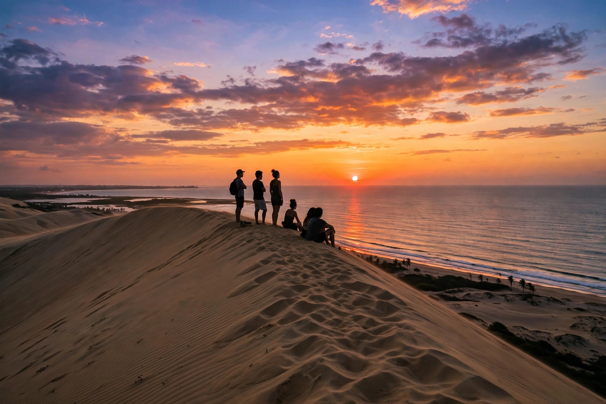

Jericoacoara is a village and beach in the municipality of Jijoca de Jericoacoara, in the western coast of the Brazilian state of Ceará, about 300 kilometres west of Fortaleza. Once a remote fishing village accessible only by buggy over sand tracks, it became one of Brazil's most celebrated beach destinations while retaining strict environmental controls as part of Jericoacoara National Park: its streets remain unpaved sand, street lighting is prohibited, and building heights are restricted.
| Jericoacoara | |
|---|---|
 | |
| Country | Brazil |
| State | Ceará |
| Municipality | Jijoca de Jericoacoara |
| Protected area | Jericoacoara National Park |
| Known for | Windsurfing, kitesurfing, Sunset Dune, Pedra Furada |
The name is of Tupi origin, traditionally interpreted as "lair of the turtles." Jericoacoara remained an isolated fishing community until the 1980s, when it was discovered by backpackers and windsurfers; in 1984 the area was declared an Environmental Protection Area, and in 2002 it became a national park. The Washington Post once listed its beach among the world's ten most beautiful. An airport (Jericoacoara–Comandante Ariston Pessoa Airport) opened in 2017 near Cruz, greatly increasing visitor numbers, though access to the village itself still requires a 4x4 ride through the dunes.
Steady trade winds make Jericoacoara a world-class destination for windsurfing and kitesurfing, especially from July to January. Landmarks include the Duna do Pôr do Sol (Sunset Dune), where crowds gather each evening to watch the sun sink into the sea; the Pedra Furada, a natural rock arch in the sea; and nearby lagoons — Lagoa do Paraíso and Lagoa Azul — with hammocks strung over turquoise fresh water. Because light pollution is minimal, the village is also noted for stargazing.